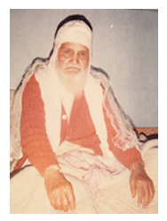

सद्गुरु & परमहंस
संक्षिप्त परिचय
श्री मंगल दास जी का जन्म विक्रम संवत 1953 (सन 18 अक्टूबर 1896) में आश्विन मास की
द्वादशी को हुआ था l इनकी माता का नाम श्री मति नर्वदा बाई व पिता का नाम श्री कल्याण
दास जी था l मंगल दास जी अपने परिवार में सबसे बड़े पुत्र थे I इनका जन्म स्थान नेपाल
के पूर्वी जिले इलम मेलबोटे में हुआ था l ये ब्राह्मण सपकोटा परिवार गोत्र कोडिल्य में
पैदा हुए थे I
मंगल दास जी को उनके माता-पिता केवल 15 माह की उम्र में असम रंगसाली बिहाली लेकर चले गए
थे l विक्रमसंवत 1955 में इनको बसंत पंचमी के दिन दीक्षा तारतम मंत्र प्राप्त हुआ I
इनके छोटे भाई का नाम जगन्नाथ जी था l इनके गुरु श्री 108 पीताम्बर दास जी महाराज थे I
मंगल दास जी जब 4 वर्ष के थे तभी इनके पिता का धाम गमन हो गया था I जब इनकी उम्र 7 वर्ष
की हुई तब इनका यज्ञोपवित संस्कार हुआ I ये एक साधारण परिवार के थे l शुरू में इनका
धर्म समाज और साहित्य में बहुत कम योगदान रहा l इन्होंने बहुत कम उम्र में ही पीताम्बर
महाराज जी से श्री कृष्ण धर्म की दीक्षा ली थी I गुरु मंगल दास जी भारत के असम राज्य
पहुंचे और आगे की शिक्षा के लिए वहीं रहे I
12 वर्ष की आयु में मंगल दास जी अपनी माता और भाई के साथ और श्री 108 रंगी दास
जी के साथ श्री 5 पद्मावती पुरी धाम यात्रा के लिए निकल गए और पन्ना में महाराजा हरिदास
जी से वैराग्य भेस प्राप्त किया l 13 वर्ष की आयु में उन्होंने महाराजा मेहर दास जी से
श्री तारतम वाणी का ज्ञान प्राप्त किया l 15 वर्ष की आयु में उन्होंने महा मंगल पुरी
धाम की यात्रा की और आचार्य श्री 108 पीताम्बर दास जी से पुनः तारतम वाणी की शिक्षा
प्राप्त की l जब उनकी आयु 16 वर्ष की हुई तो उन्होंने श्री 5 नवतन पुरी धाम की यात्रा
की और श्री 108 शुक्ला दास जी महाराज से मिलन हुआ I

श्री मंगल दास जी महाराज
श्री मंगल दास जी ने 17 वर्ष से लेकर 19 वर्ष तक की आयु में अम्बाला के गणदेवी वलसाड के
मन्दिरों में पूजा अर्चना की l जब इनकी आयु 20 वर्ष की हुई तब इनके गुरु श्री 108
पीताम्बर दास जी महाराज परमधाम चले गए यानी धाम गमन हो गया l 2 साल तक इन्होंने श्री 5
पद्मावती पुरी धाम में आचार्य श्री 108 धामधनी जी महाराज जी से तारतम वाणी की शिक्षा
प्राप्त की l अब इन्होंने “सेवा ही धर्म है” के सिद्धांत को पूरी तरह से व्यावहारिक रूप
दिया l
22 से 33 वर्ष की आयु में इन्होंने नागौर मेढता (राजस्थान) के मन्दिरों में सेवा की और
उन मन्दिरों का पुनः निर्माण कराया और गुफाओं में साधना भी की l 34 वर्ष की आयु में
इन्होंने महावल नगर (पंजाब) में मन्दिरों में बहुत सेवा की तथा मन्दिरों का जीर्णोद्धार
भी किया l 35 से लेकर 38 वर्ष की आयु में इन्होंने पैदल ही चार धाम (बद्रीनाथ, द्वारका,
रामेश्वरम और जगन्नाथ धाम) की यात्रा की l
जब इनकी आयु 39 वर्ष की थी तब इन्होंने गंगा के तट पर हरिद्वार में निवास किया वहां पर
इन्होंने श्री राज जी के दर्शन प्राप्त किए और ज्ञान प्राप्त किया l वहां पर इन्होंने
बड़ी ही कठिन साधना की थी I 40 वर्ष की आयु में इन्होंने श्री 5 पद्मावती पुरी धाम से
काठमांडू नेपाल तक यात्रा करके वो कलिंगपोंग पहुंचे, वहां इन्होंने इच्छा शिवालय
शास्त्रार्थ में विजयी चर्चा की l 40 वर्ष से 43 वर्ष तक इन्होंने श्री प्रणामी मंदिर
ईच्छा की सेवा और देखभाल की l
श्री मंगल दास जी महाराज - कुंजा कुटी (तपो भूमि)
1940 ई में जब 44 वर्ष की आयु थी तब श्री कृष्ण प्रणामी मंदिर कलिंगपोंग बाजार की
स्थापना की तथा कलिंगपोंग, दार्जिलिंग, असम, सिक्किम, पूर्वी नेपाल में जागरण कार्य
प्रारंभ किया I 1944 ई में 48 वर्ष की आयु में आपने प्रणामी बालिका मंदिर कलिंगपोंग की
स्थापना की l
1947 ई में 51 वर्ष की आयु में मुंबई में जागनी कार्य किया l 56 वर्ष की आयु में कुटी
कुटी की स्थापना की l जब इनकी आयु 60 वर्ष की थी तब इनकी माता श्री नर्मदा बाई जी का
धाम गमन हो गया l 63 वर्ष की आयु में श्री कृष्ण प्रणामी सभा की स्थापना की l 66 वर्ष
की आयु में जुई में श्री कृष्ण प्रणामी मंदिर की स्थापना की और हरियाणा में धर्म प्रचार
प्रारंभ किया I 70 वर्ष की आयु में आपने सिलीगुड़ी में श्री कृष्ण प्रणामी मंदिर की
स्थापना की l 71 से 73 वर्ष की आयु में प्रणामी कन्या सेवा आश्रम कलिंगपोंग में
धुलाबारी, बुधबारे शनिश्चरी और दुआगाड़ी की यात्रा और मंदिरों का निर्माण व स्थापना की
l
सन 1971 में 75 वर्ष की आयु से लेकर 76 वर्ष की आयु में आपने श्री कृष्ण प्रणामी मंदिर
सालक पुर नेपाल का निर्माण कराकर जगन्नाथ पुरी गए I आपने गुरु जी प्रणामी मिशन ट्रस्ट
की स्थापना की और सिलीगुड़ी में श्री प्राणनाथ ब्रह्मचर्य आश्रम एवं संस्कृत महा
विद्यालय की स्थापना की l 83 से 84 वर्ष की आयु में श्री कृष्ण प्रणामी विद्या निकेतन
स्कुल सिलीगुड़ी और श्री प्राणनाथ त्रिशताब्दी महोत्सव का आयोजन किया l इटाहारी नेपाल
में श्री कृष्ण प्रणामी मंदिर मुक्तिधाम बनाया
सन 1982 में 86 से 87 वर्ष की आयु में श्री कृष्ण प्रणामी मंदिर भिवानी हरियाणा, बरमेक,
दार्जिलिंग, जयगाँव और वीरपाड़ा की स्थापना की l 88 वर्ष की आयु में आपने श्री कृष्ण
प्रणामी मंदिर भिवानी में श्री 108 परायण महायज्ञ का आयोजन कराया I आपने अनाथालय,
वृद्धाश्रम, अस्पताल, स्कुल दुकाने, साहित्य लेखन और प्रकाशन के अनेक कार्य किए l
गुरु मंगल दास जी ने पश्चिम बंगाल के दार्जिलिंग, कलिंगपोंग, सिलीगुड़ी, सिक्किम और
नेपाल के पूर्वी हिस्से में काम करना चुना था l
सन 1985 (विक्रम संवत 2042) में 89 वर्ष की आयु में 1 मई को सांय 7.30 बजे उनका धाम गमन
हो गया अर्थात परम धाम चले गए I

सप्रेम प्रणाम जी !
सद्गुरु & परमहंस संक्षिप्त परिचय पढ़ने के लिए और समय निकालने के लिए धन्यवाद.
मैं आपसे अनुरोध करता हूं कि आप मुझे अपनी ईमानदार प्रतिक्रिया दें।